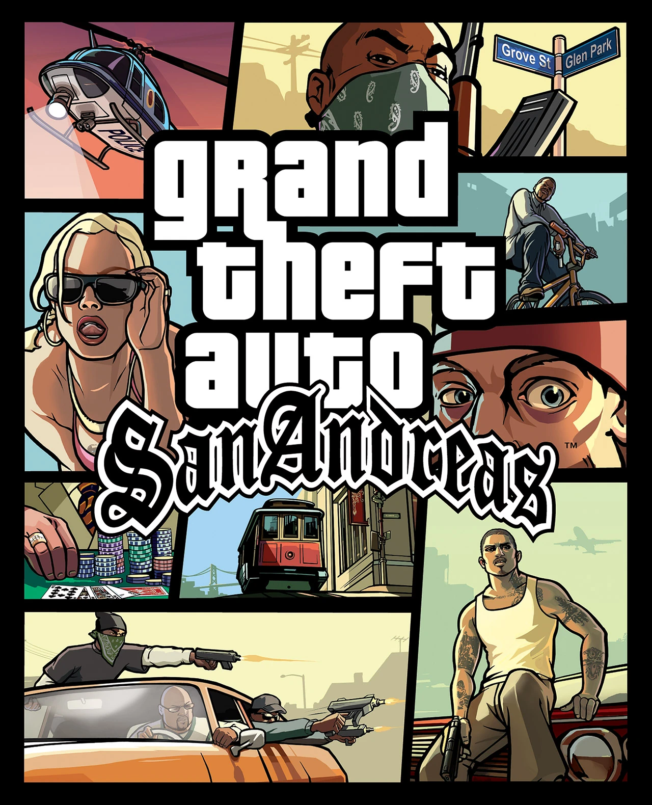
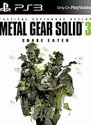
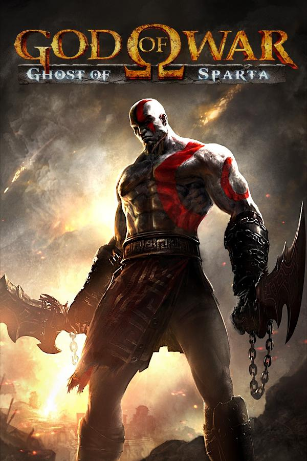
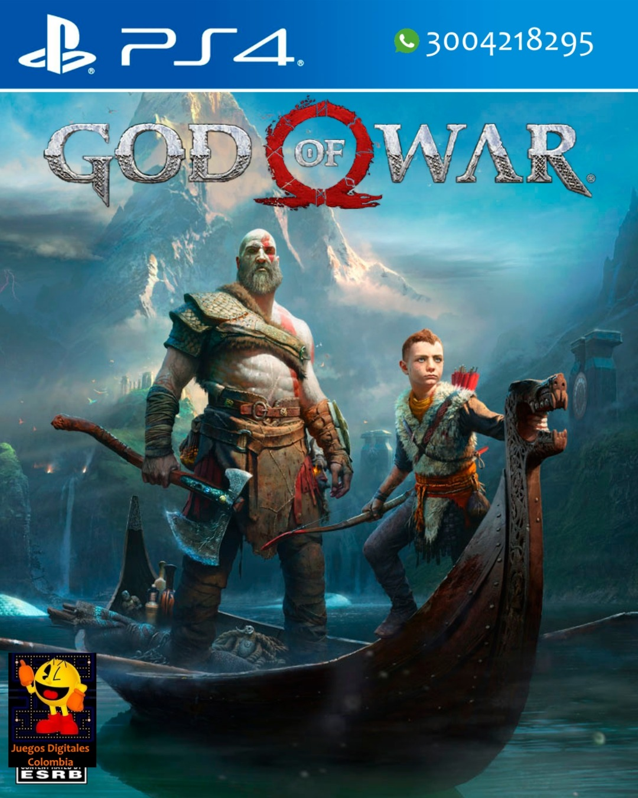
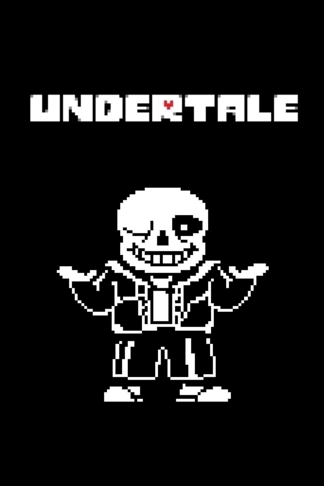
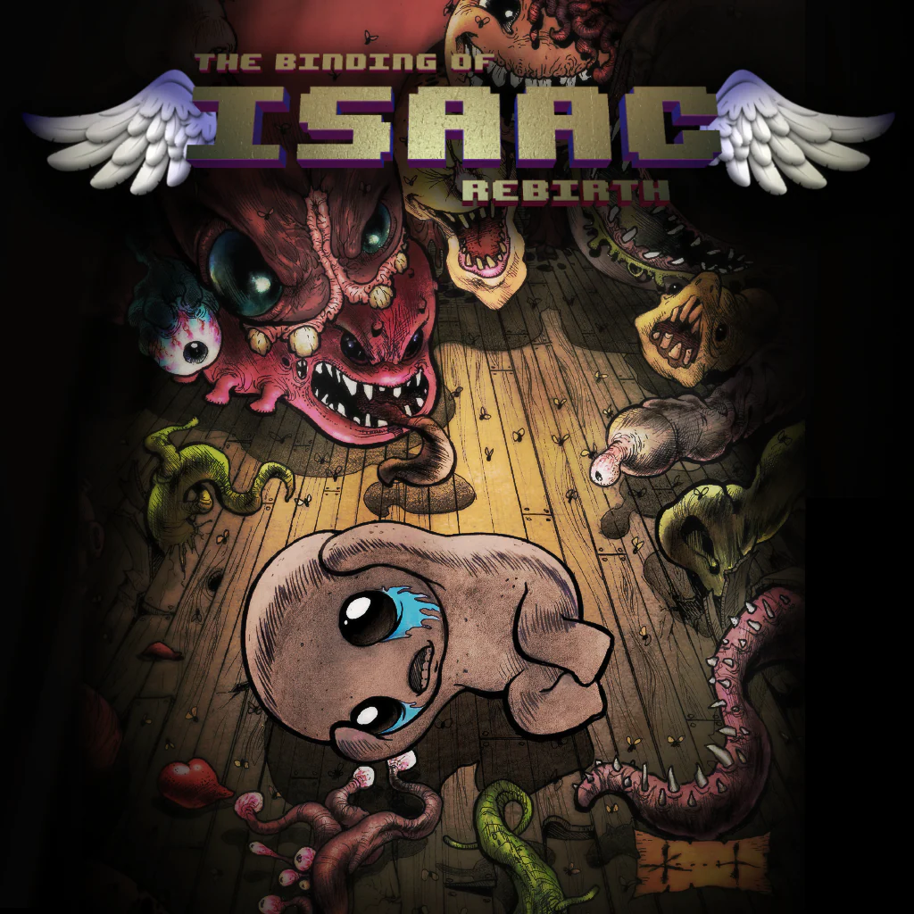
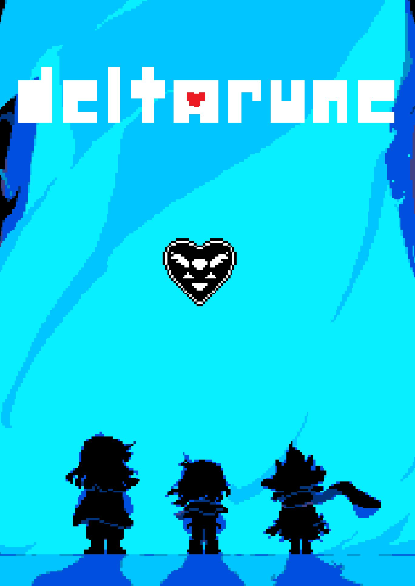
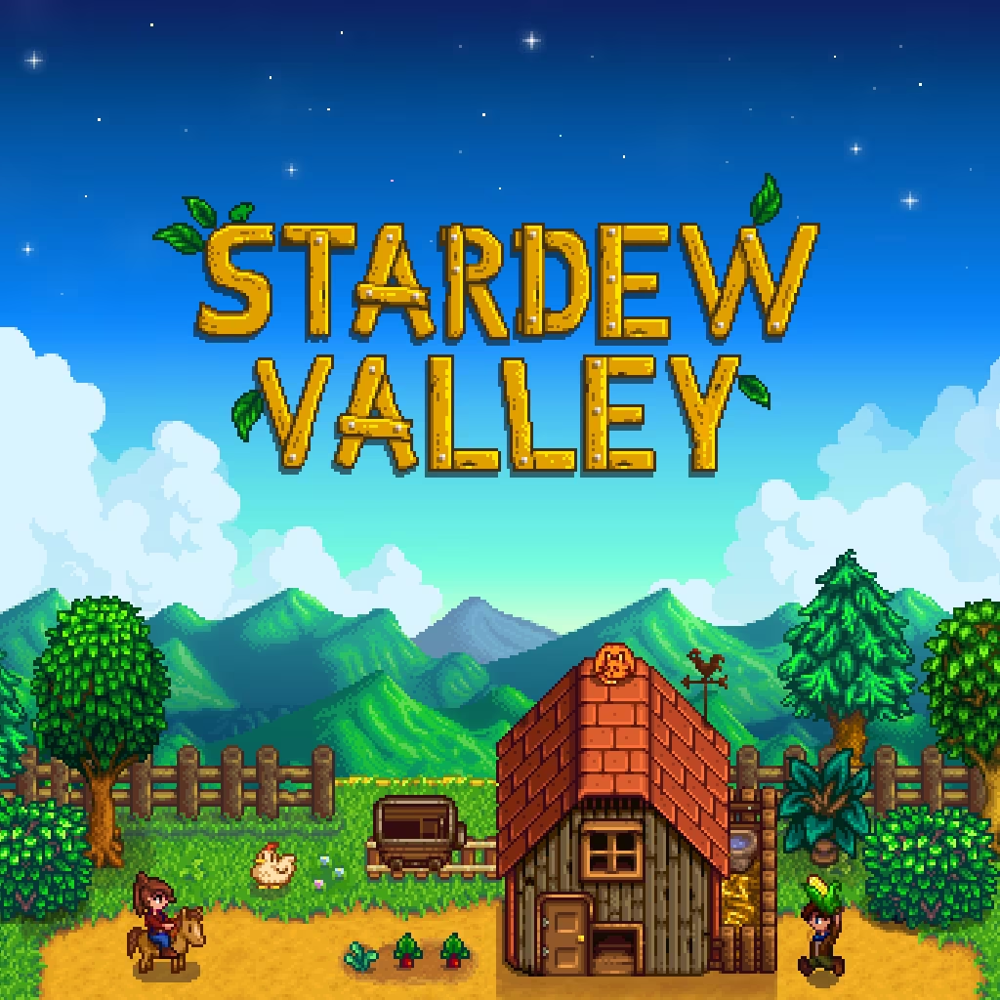
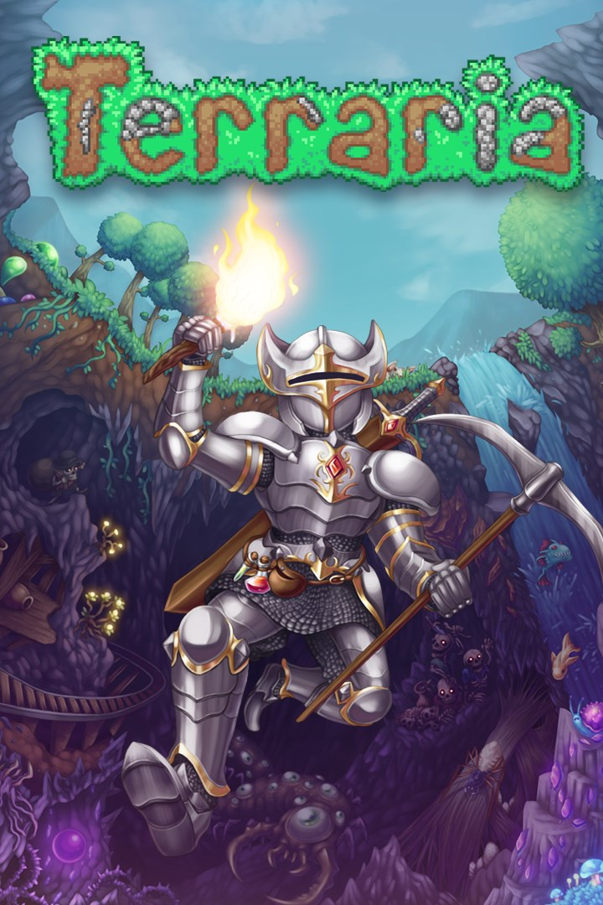

Bueno esta página va a hablar de un tema muy importante para la sociedad, osea de los jueguitos.
JUEGOS AAA
Bueno juegos creados por empresas grandes estan muy buenos y todo pero a veces son medio garcas las empresas pero bueno con lo que ganan no las juzgo yo también sería un garca si gano medio billon de dolares haciendolo.
 Bueno todo empezó con el mejor juego de la ps2 el gta san andreas cualquier persona con dos dedos de frente sabe que el gta san andreas es el mejor gta quizas le gana el 4 pero bueno. Yo lo jugaba en la play 2 y no podia pasar del nivel del tren porque era chico y no pegaba un tiro pero bueno en fin un juegazo 9/10
 Bueno dije que el mejor juego de la ps2 era el gta pero me equivoque claramente toda la saga de metal gear simplemente es mejor que cualquier gta y encima para la play 2 salio la putísima cabra del gaming el metal gear solid 3: snake eater simplemente un juegazo. Ah y encima sale remake en agosto unas re ganas
 Para la nueva generacion te sacan esta joyita de juego tan bueno que tiene hasta su propia serie simplemente un juegazo del The Last of Us lástima que lo matan a Joel en la próxima entrega por boludo otro juegazo 9/10.
Para la nueva generacion te sacan esta joyita de juego tan bueno que tiene hasta su propia serie simplemente un juegazo del The Last of Us lástima que lo matan a Joel en la próxima entrega por boludo otro juegazo 9/10.
 Bueno si vamos a hablar de juegazos tenemos acá el goat God of War 3 me acuerdo que cuando lo maté a Zeus no dejaba de pegarle y pensé que no me andaba el juego porque para que avanzase tenia que dejar de darle al circulo. 7/10 no es tan bueno como la secuela
 Acá si que la verdadera GOAT jugué este juego con pelos de punta y eso que lo jugue con 10 años igual le robó el goty al red dead redemption 2 10/10 juegazo algún dia me lo voy a platinar
 GOATS de GOATS simplemente de los mejores juegos que existen medio repetitivo pero es casi que perfecto, linda historia, linda jugabilidad y podés cagar a tiros a la gente sin que te persigan 4 tanques 28 autos y 2 helicópteros como en un GTA 11/10 me lo platinaria pero son como 400 horas y no estoy tan al pedo
GOATS de GOATS simplemente de los mejores juegos que existen medio repetitivo pero es casi que perfecto, linda historia, linda jugabilidad y podés cagar a tiros a la gente sin que te persigan 4 tanques 28 autos y 2 helicópteros como en un GTA 11/10 me lo platinaria pero son como 400 horas y no estoy tan al pedo
JUEGOS INDIE
Si vamos a hablar de buenos juegos no se puede dejar atras a juegazos creados por desarrolladores independientes
Bueno un juegazo no mucho mas para decir lo veia de chico porque no tenia donde jugarlo lamentablemente el youtuber que veia jugar resultó siendo pedófilo pero bueno nada raro en Youtube Argentina. juegazo 12/10 tiene mejor música que el Titi RKT
BUENO BUENO QUE JUEGAZO POR DIOS las primeras 20 partidas te moris todas porque sos un malo de mierda pero yo me lo platiné porque estoy al re pedo le tengo 380 horas dedicadas y le estoy haciendo terrible mod facherisimo 20/10 no se que haria sin tboi
Deltarune simplemente un universo alternativo a undertale muy bueno muy divertido todavia no salió por lo que lleva le doy un 9/10 puede mejorar. DELTARUNE TOMORROW
 Un juegazo 2D donde sos un esquizofrenico que mata gente no entendi la historia no entendi al personaje no entendi el juego pero me re diverti igual no jugué el epilogo se me hizo re dificil tengo el 2do cagandose de risa en la biblioteca y no lo pienso jugar 8/10 hay mejores.
Un juegazo 2D donde sos un esquizofrenico que mata gente no entendi la historia no entendi al personaje no entendi el juego pero me re diverti igual no jugué el epilogo se me hizo re dificil tengo el 2do cagandose de risa en la biblioteca y no lo pienso jugar 8/10 hay mejores.
Stardew Valley heredas la casa de tu abuelo en el campo y por boludo ahora tenes que laburar la tierra es la historia del 20% de los dueños de tierras de Pergamino el juego está entretenido y te podes casar y yo que se si queres estar chill esta bueno 9/10 es mejor con amigos
Muchos dirán copia 2D del minecraft y el que diga eso es porque tiene algun tipo de discapacidad mental terraria es un juegazo y si le metes el calamity es como intentar manejar alcoholizado un juegazo muy divertido no lo juego solo siempre con amigos porque no estoy tan al pedo y se re complica solo pero bueno 10/10 tengo como 200 horas